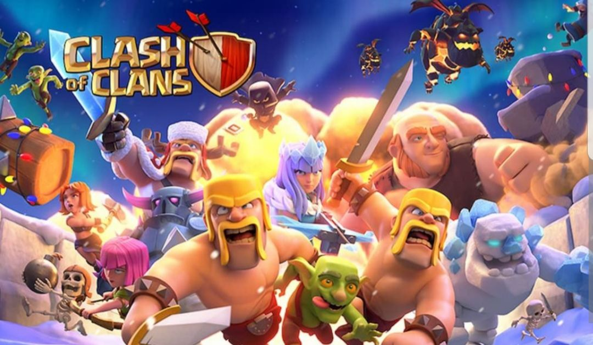

A Game I Enjoy
October 2, 2022 by Mario Thompson
One of my all time favourite games to play has to be Clash of Clash that was created by Supercell. It is a game of strategy that offers you the ability to battle against opponents online where only the mentally strong survive. Many will look at it from the outside and think that it is just another game that negatively impacts the youth, but I disagree, because this particular game requires an above average ability to plan, execute, and not to mention, requires some amount of mental fortitude, because without it you will most likely crumble under pressure.
While it is a game that is fun and can be enjoyed by all, it does become competitve at times, although mostly competitve, which is healthy ofcourse and that in and of itself is why I will always play this particular game and others like it.